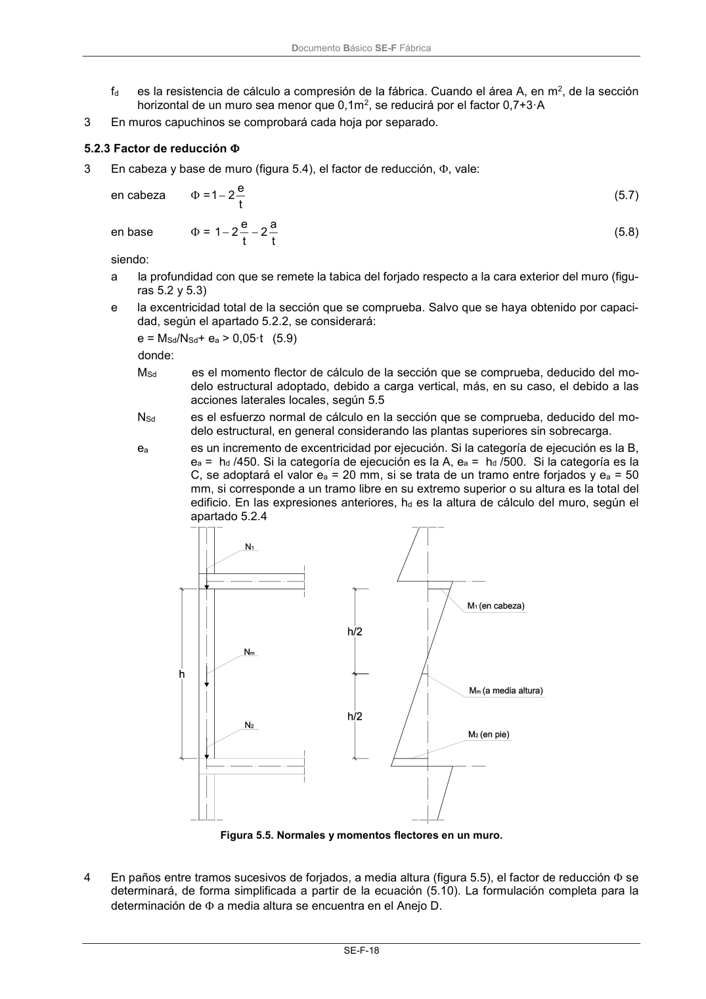

DB-SE-F · 5.2.3 Factor de reducción · versión 2019-12-20 · capa oficial
Formatos: JSON compacto · Markdown · PDF fuente
Ámbito del documento · texto del ámbito · documento y tablas
ID técnico a0052 · PDF pág. 22-23 · jerarquía no validada por persona · contrastado con el literal de la página 22 (candidato tipográfico); no validado por persona · padre: raíz
5.2.3 Factor de reducción 3 En cabeza y base de muro (figura 5.4), el factor de reducción, , vale: en cabeza = t e 2 1 (5.7) en base = t a 2 t e 2 1 (5.8) siendo: a la profundidad con que se remete la tabica del forjado respecto a la cara exterior del muro (figu- ras 5.2 y 5.3) e la excentricidad total de la sección que se comprueba. Salvo que se haya obtenido por capaci- dad, según el apartado 5.2.2, se considerará: e = MSd/NSd+ ea > 0,05·t (5.9) donde: MSd es el momento flector de cálculo de la sección que se comprueba, deducido del mo- delo estructural adoptado, debido a carga vertical, más, en su caso, el debido a las acciones laterales locales, según 5.5 NSd es el esfuerzo normal de cálculo en la sección que se comprueba, deducido del mo- delo estructural, en general considerando las plantas superiores sin sobrecarga. ea es un incremento de excentricidad por ejecución. Si la categoría de ejecución es la B, ea = hd /450. Si la categoría de ejecución es la A, ea = hd /500. Si la categoría es la C, se adoptará el valor ea = 20 mm, si se trata de un tramo entre forjados y ea = 50 mm, si corresponde a un tramo libre en su extremo superior o su altura es la total del edificio. En las expresiones anteriores, hd es la altura de cálculo del muro, según el apartado 5.2.4 Figura 5.5. Normales y momentos flectores en un muro. 4 En paños entre tramos sucesivos de forjados, a media altura (figura 5.5), el factor de reducción se determinará, de forma simplificada a partir de la ecuación (5.10). La formulación completa para la determinación de a media altura se encuentra en el Anejo D. Documento Básico SE-F Fábrica SE-F-19 = t e 2 1 m (5.10) siendo: em = e + ep (5.11) donde: e es la excentricidad debida a las solicitaciones en ese punto, según (5.9), ep la excentricidad debida a pandeo, de valor ep = 0,00035 ·t · (hd / td)2 (5.12) 5 La excentricidad por fluencia puede considerarse nula para muros ejecutados con piezas cerámicas o de piedra natural, y en muros ejecutados con otro tipo de piezas con esbeltez menor o igual a 15. Para tener en cuenta la fluencia, el valor ep se incrementará en: ep = m d d e·t · t h · · 002 ,0 (5.13) donde: hd es la altura de cálculo, según el apartado 5.2.4 td es el espesor de cálculo del muro, según 5.2.5

PDF fuente redistribuible: copia fiel enlazada en esta página (SHA256 verificado).